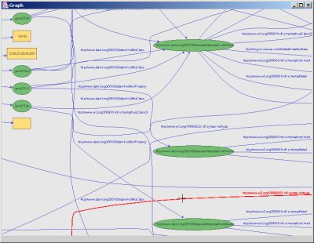

Fentwine: A navigational RDF browser and editor
Benja Fallenstein
Hyperstructure Group
Agora Center, University of Jyväskylä
P.O.Box 35, FIN-40014 Jyväskylä, Finland
E-mail: b.fallenstein@gmx.de
Abstract
We present an approach to RDF visualization in which a central node is shown in the middle of the screen and the nodes directly connected to it are arranged around it, making a different node the central one when the user clicks on it. With this navigational approach, the user can see which nodes are connected to the central node without following long connective lines through a graph. However, experience with our work-in-progress implementation suggests that more work is needed on representing common structures in a concise manner.
Introduction
The usual approach to visualizing RDF graphs is to create a 2D layout of all nodes in a graph. This approach is taken by the IsaViz and RdfViz applications, for example. However, this approach, it can be hard to see which nodes are connected (Figures 1 and 2).
Figure 1: Screenshot of the IsaViz RDF editor. Taken from the IsaViz website.

Figure 2: A screenshot of IsaViz that shows how the spatial layout approach makes it difficult to follow connections in a large graph. Taken from the IsaViz website.
We propose to apply to RDF an approach originally developed for semantic network visualization by the SemNet research group (Fisher and Kibby 1996). The Semantica software is based on this (Figure 3).
The SemNet approach is to show a central node in the middle of a screen, and show around it the nodes directly connected to it. When the user double-clicks on one of the connected nodes, it is made the central node. We call this approach navigational.
Figure 3: Screenshots of the Semantica software. Left: An example network bundled with the Semantica software; the central node is "Charlotte's Web." Right: After the user has double-clicked on the "Charlotte" node, it has become the central node. (Larger versions: Left image, right image.)
{kind=link}
{kind=link}
Fentwine
In this section we introduce Fentwine, our prototype of a navigational RDF browser and editor. Fentwine is part of the Fenfire project, which develops an RDF-based desktop environment (Fallenstein and Lukka 2004).
Fentwine shows the nodes connected directly to the central node on an ellipse around the central node. Nodes more than one step away from the central node are also shown, up to a maximum number of steps. Nodes further away from the center fade into the background.
The property of each connection is shown between the two connected nodes. Each property is shown in a different color, computed deterministically from the property's URI. This allows the user to recognize the type of a connection without reading the property name.
Fentwine hides nodes' and property's URIs if a natural language label is available. For example, this can be a person's name. A pre-defined set of properties for finding the label of a node is provided (containing e.g. rdf:label and foaf:name). The user can extend this set.
We show the user a list of the properties in the current RDF graph, which allows them to show or hide each property separately. Properties can be grouped in categories which can be switched on and off as a whole. For example, when browsing a FOAF network, the user can hide all properties except foaf:knows. This reduces clutter by hiding relationships irrelevant to the task at hand (for example, foaf:workplaceHomepage). This feature derives from Nelson's ZigZag (Nelson 2004).
A screenshot is shown in Figure 4. Figure 5 shows how Fentwine uses animation to make moving from one central node to another smooth.
Figure 4: Screenshot of Fentwine, showing a semantic network containing notes. The central node is "Story Apr'04." (Larger version).
{kind=link}

Figure 5: The animation Fentwine shows when moving from one node to another. The example data is a subgraph of a biological taxonomy, made available by Eric Jain. (Larger versions: 1, 2, 3, 4)
{kind=link}
{kind=link}
{kind=link}
{kind=link}
Fentwine works reasonably well for graphs created with it, as well as for many RDF files on the Web, as long as the properties to use to find natural-language labels are specified. However, there are many RDF structures that it does not represent well, yet.
An example is shown in Figure 6. The structure shown specifies that ovo-vegetarian food is a subclass of the intersection of a class equivalent to food with the complement of the union of a subclass of meat, including fish, with a subclass of dairy. (We didn't write the ontology.)
Figure 6: Fentwine showing an ontology describing different kinds of vegetarians, highlighting problems with showing some kinds of RDF. One is tempted to make a comment about mazes of twisty little passages, all alike. (Larger version)
{kind=link}
The problem seems to be that there are many interconnected anonymous nodes that don't have labels. We hope that this problem can be solved by providing special ways to render these structures, which map more directly to the user's mental model.
We already use this approach to show RDF collections. In Figure 6, the values of e.g. owl:unionOf are collections. Instead of showing the internal RDF structure, we show different unionOf "connections" between the union and each member of the collection. This appears to work well. (However, we have not yet decided how collection properties should be visually distinguished from ordinary properties; currently, we show connective lines between the elements of the collection.)
Conclusions
We have proposed to adapt SemNet's navigational approach to graph browsing to RDF, and reported on our work-in-progress implementation. Our software works reasonably well for some kinds of RDF, but structures that make use of many connected anonymous nodes without properties that could be used as labels (such as OWL intersections) are not yet shown well.
References
Fallenstein, B., and Lukka, T.J.: "Hyperstructure: Computers built around things that you care about". Submitted to the Third Hyperstructure Workshop at the ACM Hypertext'2004 conference.
Fisher, K.M., and Kibby, M. (Ed): Knowledge Acquisition, Organization and Use in Biology. Springer Verlag, New York, 1996.
Nelson, T.H.: "A Cosmology for a Different Computer Universe: Data Model, Mechanisms, Virtual Machine and Visualization Infrastructure". Journal of Digital Information 5(1), 2004.